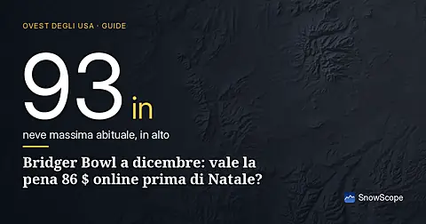
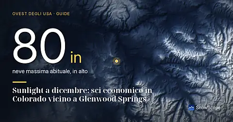
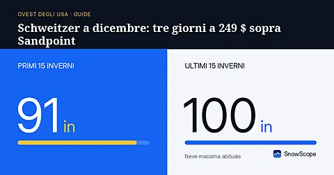
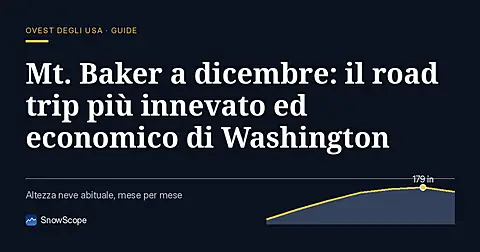
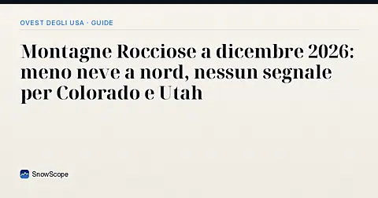
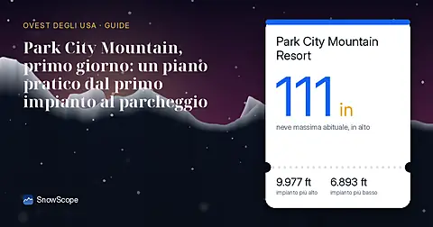
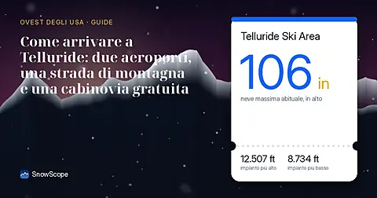
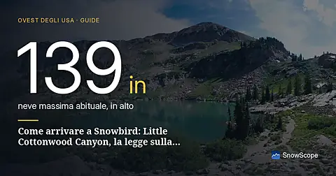
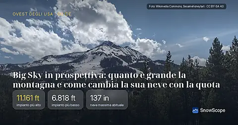
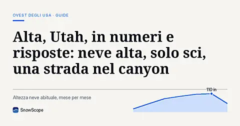

Bollettini neve · Ovest degli USA
Bollettini neve quotidiani per sciatori: dove c'è neve, cosa arriva e dove sciare, dalla mappa neve di SnowScope e dalle stazioni di misura. Ogni numero viene dai dati del giorno.

Beaver Mountain applica un unico prezzo adulti di 75 $ per la stagione 2026-27. La nostra storia della neve dice che inizio dicembre lì è un vero azzardo; la settimana prima di Natale è molto più sicura.

Il biglietto adulti 2026/27 di Bridger Bowl è a 86 $ online, 99 $ alla cassa. La nostra serie storica dice che metà dicembre è un testa o croce a mezza montagna; fine dicembre è più sicuro.

Indy Base Pass 419 $, Indy+ 469 $, due giorni in ogni stazione aderente. Lo abbiamo confrontato con i prezzi giornalieri verificati di sette stazioni Indy a dicembre, e le loro probabilità di neve.

I biglietti adulti di Lookout Pass per il 2026-2027 sono a 63 $ nei giorni feriali con prenotazione, 75 $ nel weekend. A mezza montagna c'erano 20 in (50 cm) entro il 15 dicembre nell'85 % degli inverni passati.

I biglietti adulti 2026/27 di Montana Snowbowl sono a 78 $ nei feriali e 85 $ nel weekend. A mezza montagna c'erano 20 in (50 cm) entro il 15 dicembre nell'83 % dei nostri inverni passati.


I biglietti di Sunlight partono da 74 $ e il suo Sunny 6 Pack costa 349 $ se comprato entro il 30 novembre 2026. A mezza montagna c'erano 20 in (50 cm) entro il 15 dicembre nel 72 % degli inverni.

A Timberline lo skipass giornaliero costa 129 $ in bassa stagione e 161 $ in alta stagione; lo skipass pomeridiano è a 96 $ in bassa stagione. A metà montagna di solito si trovano 52 in (132 cm) entro il 15 dicembre.

Da Ski Cooper (49 $ nei giorni feriali, 99 $ nel weekend) a Mt. Baker (98,80 $ contro 115,42 $): le differenze di prezzo di dicembre verificate in sette stazioni dell'Ovest americano, con le loro probabilità di neve.

Il 3-Pack 2026/2027 di Schweitzer costa 249 $, 83 $ al giorno secondo il conteggio dello stesso resort. La cima di solito mantiene 54 in (138 cm) di neve entro il 15 dicembre.

Brighton da 72 $ contro Ski Cooper a 49 $ nei giorni feriali e Wolf Creek a 96 $: le stazioni economiche dello Utah e del Colorado a confronto su 46 inverni di neve a dicembre.

Gli skipass giornalieri di Brundage partono da appena 65 $ in alcuni giorni; a mezza montagna c'erano 20 in (50 cm) di neve il 15 dicembre nell'87 % dei nostri inverni passati. Date festive da evitare.

Gli skipass giornalieri adulti di Snow King partono da 100 $. Secondo la nostra storia nevosa, a mezza montagna si registravano 20 in (50 cm) entro il 15 dicembre nell'87 % degli inverni: un modo economico per sciare nella valle di Jackson.

Loveland vende biglietti online a 60 $ fino al 13 dicembre 2026, poi a 159 $ alla cassa. La neve di inizio dicembre è abbastanza buona per approfittarne? I nostri 46 inverni passati rispondono settimana per settimana.

I biglietti online di White Pass partono da 69 $ nei giorni fuori picco e 89 $ nei giorni di picco, e a mezza montagna il 15 dicembre c'erano 20 in (50 cm) di neve nell'87 % degli inverni passati.

A Wolf Creek lo skipass adulti per la stagione 2026-2027 costa 96 $ nei giorni normali e 110 $ nei giorni di punta; a mezza montagna la neve era di 34 in (87 cm) in un tipico 15 dicembre.

Gli skipass giornalieri di Brighton per il 2026/27 partono da 72 $ comprando in anticipo. A mezza montagna il 15 dicembre ci sono di solito 37 in (94 cm) di neve, contro 25 in (64 cm) a Park City.

16 stazioni sciistiche americane economiche classificate secondo le probabilità di neve a dicembre su 46 inverni passati, con i prezzi giornalieri verificati: da 49 $ nei giorni feriali a 125 $ e oltre.

In tutti i nostri 46 inverni passati, a metà montagna di Grand Targhee c'erano sempre almeno 20 in (50 cm) di neve il 15 dicembre. Il biglietto giornaliero online va da 125 $ a 180 $ a seconda della data.

Mt. Baker a dicembre: 46 in (116 cm) di neve a metà montagna in un tipico 15 dicembre, e uno skipass da 98,80 $ dal lunedì al giovedì, venduto solo in giornata alla cassa.

Una nevicata il 4 novembre ha lasciato da 8 a 13 inches di neve fresca su cinque stazioni in quota del Colorado vicino ad Aspen. Cinque giorni dopo, metà era sparita. Cosa significa per le giornate di powder.

Dove dicembre 2026 sembra più o meno nevoso dal Montana al New Mexico: la previsione stagionale europea e la nostra mappa, con Colorado, Utah e Rocciose del Nord.

Vail in numeri: picco abituale di circa 64 in (162 cm) a metà montagna in 46 inverni passati, marzo il mese più nevoso, più terreno, accesso e sicurezza.

Steamboat, Colorado, per famiglie: cosa va bene per i più piccoli, i bambini, i ragazzi e i genitori, con la neve di 46 inverni passati a tre quote.

Come passare il primo giorno a Park City Mountain, Utah, e quando andarci: il nostro storico dà circa 71 in (180 cm) come picco abituale a metà montagna in 46 inverni passati.

Mt Baker, Washington: circa 133 in (337 cm) di picco abituale a metà montagna in 46 inverni passati, un record mondiale di neve, nessun alloggio in quota.

Pianifica Mammoth Mountain per stagione: circa 93 in (235 cm) di picco abituale a metà montagna in 46 inverni passati, marzo il più nevoso, primavere lunghe, inverni variabili.

I miti su Jackson Hole verificati con i fatti e il nostro storico: circa 80 in (204 cm) di picco abituale a metà montagna in 46 inverni passati, senza un calo chiaro.

Arrivare a Telluride d'inverno, aeroporto per aeroporto: Telluride Regional, Montrose, la strada 145 con la legge sulla trazione del Colorado e la cabinovia gratuita per Mountain Village.

Arrivare a Snowbird d'inverno: una sola strada nel canyon (SR-210), la legge sulla trazione dello Utah, lo ski bus UTA e il tragitto dall'aeroporto.

In auto a Palisades Tahoe d'inverno: distanze da Reno, controlli catene R-1, R-2 e R-3, parcheggio da prenotare, bus TART gratis.

Big Sky, Montana, facile da immaginare: 5.850 acri sotto il Lone Peak, e una neve circa cinque volte più spessa vicino alla cima che alla base in 46 inverni passati.

Aspen Snowmass a confronto: Snowmass ha circa 75 in (190 cm) di picco abituale a metà montagna in 46 inverni passati, Aspen Mountain circa 69 in (174 cm).

Circa 109 in (276 cm) è il picco abituale di Alta a metà montagna in 46 inverni passati. Qui: perché lo snowboard resta a casa, i mesi migliori e come salire nel canyon.